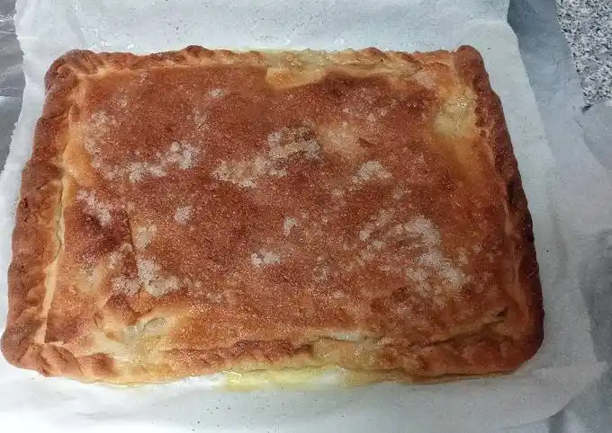

Go back
Pastillo

Description
Pastillo is a traditional Aragonese pastry, especially popular in rural areas. It consists of a crispy dough filled with sweet pumpkin and sometimes flavored with cinnamon or anise.
Ingredients
- 500g pumpkin, peeled and grated
- 100g sugar
- 1 teaspoon cinnamon
- 1 tablespoon anise liqueur
- 300g all-purpose flour
- 100ml olive oil
- 100ml white wine
- 1 pinch of salt
Preparation
- Mix the grated pumpkin with sugar, cinnamon and anise liqueur.
-
- Let it sit for about 30 minutes to release its juices.
- In a bowl, mix the flour, olive oil, white wine and salt.
- Knead until smooth and let it rest for 15 minutes.
- Roll out the dough into thin circles (about 15cm in diameter).
- Place a spoonful of the pumpkin filling in the center.
- Fold the dough over to form a half-moon shape and seal the edges by pressing with a fork.
- Heat olive oil in a pan and fry the pastillos until golden and crispy.
- Drain on paper towels.
- Sprinkle with powdered sugar before serving.